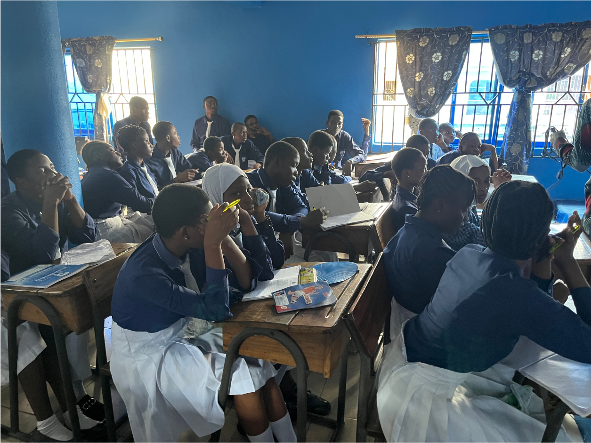
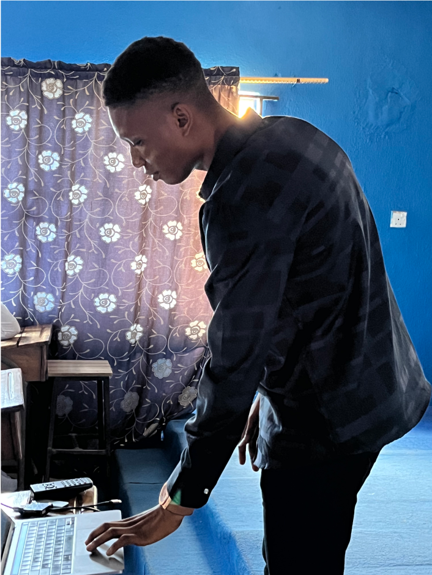

<script>
    let page = "about";
    let pPath = "./";
</script>
<script src="js/header.js"></script>
<main id="about">
    <section id="intro">
        <div class="bodyCont">
            <div class="dFlex">
                <div class="fadeAnim left delay3-3" data-topAnim="1000">
                    <div class="imgCont">
                        
                    </div>
                </div>
                <div class="fadeAnim right delay3-3" data-topAnim="1000">
                    <div class="txtCont">
                        <h1>
                            Àbá kìí dòótọ́, ojo ni kìí jẹ́ ká dáa - Yorùbá
                            Proverb
                            
                        </h1>
                        <div class="content">
                            The proverb loosely means that success comes from
                            taking action, and it is fear or lack of courage
                            that prevents one from making an attempt.
                        </div>
                        
                    </div>
                </div>
            </div>
        </div>
    </section>
    <section id="otherInfo">
        <div class="bodyCont">
            <div class="txtCont">
                I am David Shittu, a Product Designer and UX Researcher based in
                Lagos, Nigeria
                
                <br /><br />

                I love creating simple, awesome digital products that push the
                boundaries of innovation while maintaining usability and
                usefulness. My approach to design is rooted in informed
                decision-making, drawing insights from thorough research,
                whether primary or secondary. I place a strong emphasis on
                creating designs that are inclusive and accessible to all. I
                believe in the power of first principle thinking. <br /><br />

                I currently work as a freelance designer at This is Garcy design
                studio, where I collaborate with clients from around the world.
                <br />
                
                <br />

                I am not your typical nerd, but I definitely have a touch of
                geekiness. With a keen interest in technology and a love for
                learning, I embrace my inner nerd while still maintaining a cool
                and social demeanor. I effortlessly blend in with different
                social groups, bringing my own unique mix of intelligence,
                humor, and style to any situation. I am the perfect balance of
                geek and charm 😜🫠
                <br /><br />

                During my free time, you will often find me immersed in various
                activities such as watching YouTube and movies, playing the
                keyboard, and studying my Bible. <br /><br />

                See some of my recommendations
                <a href="https://drive.google.com/file/d/1ByBHiSNoeXRfFdg33ebhjNqVuQToYgu/view?usp=sharing" target="_blank" class="fw600 primCol">here</a>
            </div>
            <div class="imgFlex">
                <div class="bigImg fadeAnim left">
                    <div class="imgCont">
                        
                    </div>
                </div>
                <div class="smallImg fadeAnim right">
                    <div class="imgCont">
                        
                    </div>
                </div>
            </div>
            <div class="txtCont">
                You can also find me teaching design to secondary (high) school
                student in my local community. <br /><br />

                I’m always excited to meet new people, You can send me a mail
                <a
                    href="mailto:davidshittu02@gmail.comHey%F0%9F%91%8B%2C%20David!%0D%0A%0D%0A"
                    target="_blank"
                    class="fw600 primCol"
                    >here</a
                >
                for a coffee chat. <br />
                And yes, I love quotes 😵‍💫
            </div>
        </div>
    </section>
</main>
<script src="js/footer.js"></script>
